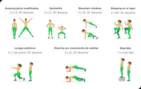
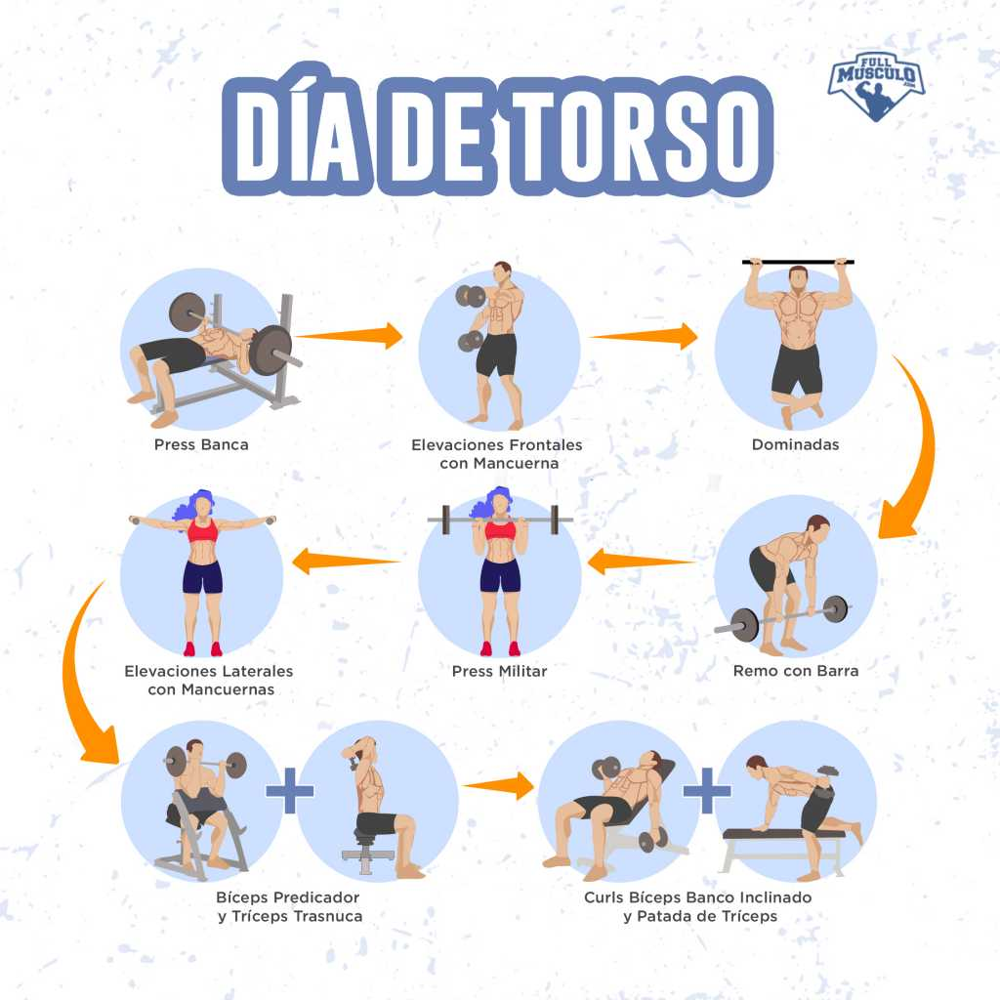
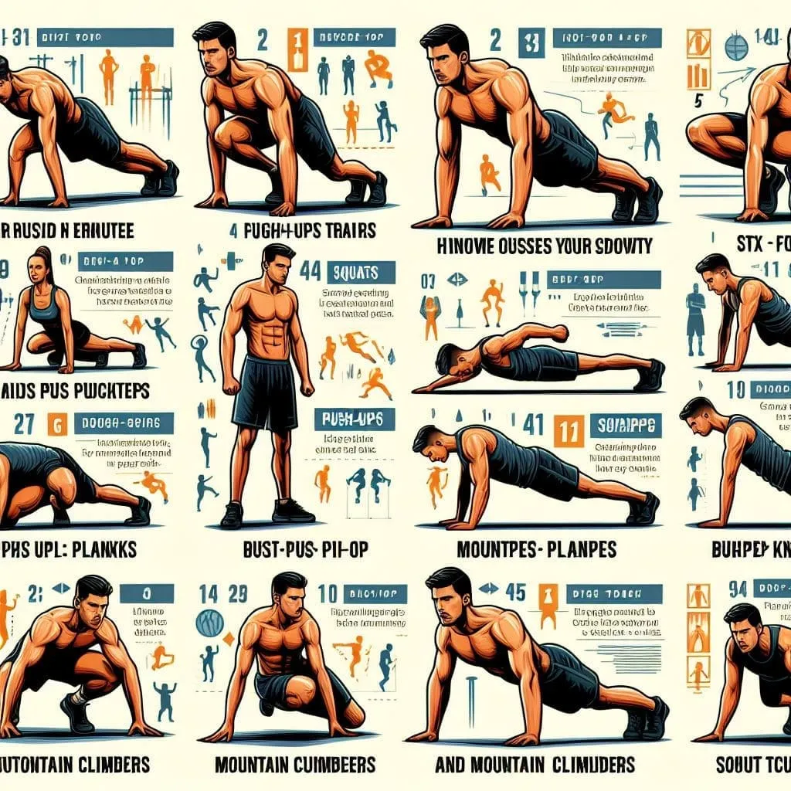
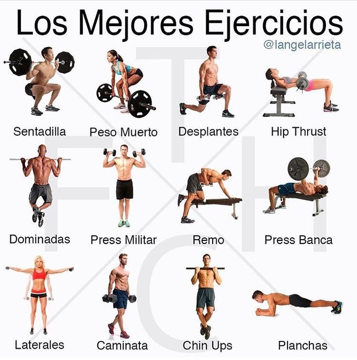
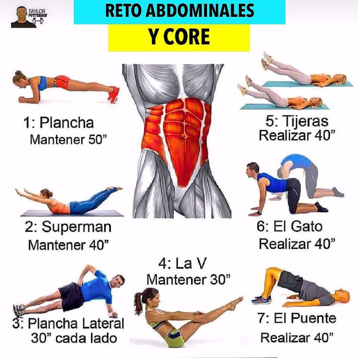
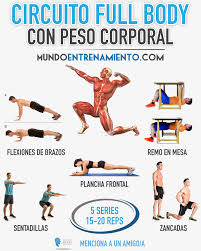

Rutinas de Ejercicio

Rutina Principiante - Cardio
20 minutos • Quema 150-200 calorías

Rutina Intermedia - Fuerza
30 minutos • Todo el cuerpo

Rutina Avanzada - HIIT
45 minutos • Quema 400+ calorías

Entrenamiento de Fuerza – Cuerpo Completo
45 minutos • Rutina con pesas o tu propio peso corporal para trabajar todos los grupos musculares.

Rutina de Abdomen (Core Workout)
20 minutos • Ideal para tonificar el abdomen y fortalecer la zona lumbar.Mejora la movilidad, flexibilidad y reduce el estrés.

Circuito Full Body (con peso corporal)
35 minutos • Se trabajan todos los músculos sin necesidad de equipo.Enfocada en tren inferior, ideal para fortalecer y tonificar.